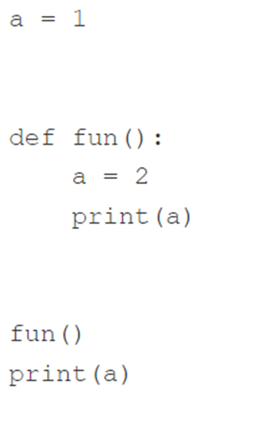

def hi(name):
print("Hi,", name)
hi("Greg")Hi, Gregauthor: “© Гончар Юрій , date:”22.10.2024”
Мета: навчитися писати функції та користуватися ними
Приклад функції з одним параметром і без ключового слова return:
def hi(name):
print("Hi,", name)
hi("Greg")Hi, GregПриклад функції з ключовим словом return:
def strange_function(n):
if(n % 2 == 0):
return True
print(strange_function(2))
print(strange_function(1))
True
NoneНаписати і протестувати функцію, яка приймає один аргумент (рік) і повертає True, якщо рік є високосним, або False інакше.
Основу функції вже закладено у коді в редакторі.
Для вас підготовлено короткий тестуючий код, який можна використовувати для перевірки своєї функції.
У коді використовуються два списки - один із тестовими даними, інший - з очікуваними результатами. Код повідомить Вам, якщо якісь із Ваших результатів неправильні.
# def is_year_leap(year):
# #
# # Write your code here.
# #
# test_data = [1900, 2000, 2016, 1987]
# test_results = [False, True, True, False]
# for i in range(len(test_data)):
# yr = test_data[i]
# print(yr,"->",end="")
# result = is_year_leap(yr)
# if result == test_results[i]:
# print("OK")
# else:
# print("Failed")# Мій код
def is_year_leap(year):
if (year % 4 == 0 and year % 100 != 0) or (year % 400 == 0):
return True
else:
return False
# Тестування функції
test_data = [1900, 2000, 2016, 1987]
test_results = [False, True, True, False]
for i in range(len(test_data)):
yr = test_data[i]
print(yr, "->", end="")
result = is_year_leap(yr)
if result == test_results[i]:
print("OK")
else:
print("Failed")1900 ->OK
2000 ->OK
2016 ->OK
1987 ->OKНаписати та протестувати функцію, яка приймає два аргументи (рік і місяць) і повертає кількість днів для даної пари рік-місяць (у той час, як тільки лютий чутливий до значення year, Ваша функція має бути універсальною).
Початок функції готовий. Тепер переконайте функцію повернути None, якщо її аргументи не мають сенсу.
Звичайно, Ви можете (і повинні) використовувати раніше написану та протестовану функцію (див. попередні лаб. роб.). Це може бути дуже корисним. Ми рекомендуємо використовувати список із зазначенням довжини місяців. Ви можете створити його всередині функції – цей трюк значно скоротить код.
Ми підготували тестуючий код. Розвійте його, щоб увімкнути більше тестових випадків.
# def is_year_leap(year):
# #
# # Your code from LAB 4.3.6.
# #
# def days_in_month(year, month):
# #
# # Write your new code here.
# #
# test_years = [1900, 2000, 2016, 1987]
# test_months = [2, 2, 1, 11]
# test_results = [28, 29, 31, 30]
# for i in range(len(test_years)):
# yr = test_years[i]
# mo = test_months[i]
# print(yr, mo, "->", end="")
# result = days_in_month(yr, mo)
# if result == test_results[i]:
# print("OK")
# else:
# print("Failed")# Мій код
def is_year_leap(year):
if (year % 4 == 0 and year % 100 != 0) or (year % 400 == 0):
return True
else:
return False
def days_in_month(year, month):
if month < 1 or month > 12:
return None
days_in_months = [31, 28, 31, 30, 31, 30, 31, 31, 30, 31, 30, 31]
if month == 2 and is_year_leap(year):
return 29
else:
return days_in_months[month - 1]
# Тестування функції
test_years = [1900, 2000, 2016, 1987, 2024, 2021, 2024, 2023]
test_months = [2, 2, 1, 11, 2, 2, 12, 13]
test_results = [28, 29, 31, 30, 29, 28, 31, None]
for i in range(len(test_years)):
yr = test_years[i]
mo = test_months[i]
print(yr, mo, "->", end="")
result = days_in_month(yr, mo)
if result == test_results[i]:
print("OK")
else:
print("Failed")
1900 2 ->OK
2000 2 ->OK
2016 1 ->OK
1987 11 ->OK
2024 2 ->OK
2021 2 ->OK
2024 12 ->OK
2023 13 ->OKНаписати та протестувати функцію, яка приймає три аргументи (рік, місяць та день місяця) та повертає відповідний день року або None, якщо якийсь із аргументів невірний.
Використовуйте раніше написані та протестовані функції. Додайте до коду свої власні тестові випадки.
# def is_year_leap(year):
# #
# # Your code from LAB 4.3.1.6.
# #
# def days_in_month(year, month):
# #
# # Your code from LAB 4.3.1.7.
# #
# def day_of_year(year, month, day):
# #
# # Write your new code here.
# #
# print(day_of_year(2000, 12, 31))# Мій код
def is_year_leap(year):
if (year % 4 == 0 and year % 100 != 0) or (year % 400 == 0):
return True
else:
return False
def days_in_month(year, month):
if month < 1 or month > 12:
return None
days_in_months = [31, 28, 31, 30, 31, 30, 31, 31, 30, 31, 30, 31]
if month == 2 and is_year_leap(year):
return 29
else:
return days_in_months[month - 1]
def day_of_year(year, month, day):
if month < 1 or month > 12 or day < 1 or day > days_in_month(year, month):
return None
day_of_year = day
for m in range(1, month):
day_of_year += days_in_month(year, m)
return day_of_year
# Тестування функції
test_cases = [
(2000, 12, 31, 366),
(2001, 1, 1, 1),
(2020, 2, 29, 60),
(2021, 2, 28, 59),
(2000, 2, 30, None), # Invalid day for leap year
(2021, 13, 1, None) # Invalid month
]
for case in test_cases:
year, month, day, expected = case
result = day_of_year(year, month, day)
print(f"{year}-{month:02d}-{day:02d} -> ", end="")
if result == expected:
print("OK")
else:
print("Failed")2000-12-31 -> OK
2001-01-01 -> OK
2020-02-29 -> OK
2021-02-28 -> OK
2000-02-30 -> OK
2021-13-01 -> OKНатуральне число є простим, якщо воно більше 1 і не має дільників, крім 1 і самого себе.
Важко? Зовсім ні. Наприклад, 8 не є простим числом, оскільки Ви можете розділити його на 2 та 4 (ми не можемо використовувати дільники, рівні 1 та 8, оскільки визначення забороняє це).
З іншого боку, 7 - просте число, оскільки ми можемо знайти йому підходящих дільників.
Ваше завдання - написати функцію, що перевіряє, чи є число простим чи ні.
Функція:
is_prime;True, якщо аргумент є простим числом, і False інакше.Спробуйте розділити аргумент на всі наступні значення (починаючи з 2) і перевірте залишок - якщо він дорівнює нулю, Ваше число не може бути простим; добре подумайте, коли вам слід зупинити процес.
Якщо вам потрібно знайти квадратний корінь із будь-якого значення, Ви можете використовувати оператор **. Пам’ятайте: квадратний корінь x дорівнює \(x^{0,5}\).
Доповніть код у редакторі.
# def is_prime(num):
# #
# # Write your code here.
# #
# for i in range(1, 20):
# if is_prime(i + 1):
# print(i + 1, end=" ")
# print()# Мій код
def is_prime(num):
if num <= 1:
return False
for i in range(2, int(num ** 0.5) + 1):
if num % i == 0:
return False
return True
# Тестування функції
for i in range(1, 20):
if is_prime(i + 1):
print(i + 1, end=" ")
print()2 3 5 7 11 13 17 19 2 3 5 7 11 13 17 19
Витрата палива автомобіля можна висловити по-різному. Наприклад, у Європі він відображається як кількість витраченого палива на 100 кілометрів шляху.
У США він відображається як кількість миль, пройдених автомобілем під час витрачання одного галону палива.
Ваше завдання - написати дві функції, що конвертують л/100км в миль на галон, і навпаки.
Функції:
liters_100km_to_miles_gallon та miles_gallon_to_liters_100km відповідно;Доповніть код у редакторі.
Запустіть свій код і перевірте, чи Ваш результат збігається з нашим.
Ось деяка інформація, яка може допомогти Вам:
# def liters_100km_to_miles_gallon(liters):
# #
# # Write your code here.
# #
# def miles_gallon_to_liters_100km(miles):
# #
# # Write your code here.
# #
# print(liters_100km_to_miles_gallon(3.9))
# print(liters_100km_to_miles_gallon(7.5))
# print(liters_100km_to_miles_gallon(10.))
# print(miles_gallon_to_liters_100km(60.3))
# print(miles_gallon_to_liters_100km(31.4))
# print(miles_gallon_to_liters_100km(23.5))60.31143162393162
31.36194444444444
23.52145833333333
3.9007393587617467
7.490910297239916
10.009131205673757
# Мій код
def liters_100km_to_miles_gallon(liters):
miles_per_100km = 100 / 1.609344 # Convert kilometers to miles
gallons_per_100km = liters / 3.785411784 # Convert liters to gallons
return miles_per_100km / gallons_per_100km
def miles_gallon_to_liters_100km(miles):
km_per_gallon = miles * 1.609344 # Convert miles to kilometers
liters_per_100km = 3.785411784 / (km_per_gallon / 100) # Convert gallons to liters per 100 km
return liters_per_100km
# Тестування функції
print(liters_100km_to_miles_gallon(3.9)) # Очікуваний вивод: 60.31143162393162
print(liters_100km_to_miles_gallon(7.5)) # Очікуваний вивод: 31.36194444444444
print(liters_100km_to_miles_gallon(10.)) # Очікуваний вивод: 23.521458333333333
print(miles_gallon_to_liters_100km(60.3)) # Очікуваний вивод: 3.9007393587617467
print(miles_gallon_to_liters_100km(31.4)) # Очікуваний вивод: 7.490910297239916
print(miles_gallon_to_liters_100km(23.5)) # Очікуваний вивод: 10.00913120567375760.31143162393162
31.36194444444444
23.52145833333333
3.9007393587617467
7.490910297239916
10.009131205673757Давайте напишемо функцію оцінки індексу маси тіла (ІМТ, BMI). \[BMI = \frac{m}{h^2}\] тут \(m\) – маса у кг, \(h\) – зріст у м.
def bmi(weight, height):
return weight / height ** 2
print(bmi(52.5, 1.65))19.283746556473833NoneФункція у попередньому прикладі виправдовує наші очікування, але вона дещо проста – вона припускає, що значення обох параметрів завжди мають сенс. Варто перевірити, чи заслуговують вони на довіру.
Давайте перевіримо їх обидва і повернемо None, якщо якесь з них виглядає підозріло.
def bmi(weight, height):
if height < 1.0 or height > 2.5 or \
weight < 20 or weight > 200:
return None
return weight / height ** 2
print(bmi(352.5, 1.65))NoneНаписати функцію, яка перевіряє, чи три сторони заданої довжини побудувати трикутник. Вона має повернути True, якщо сторони можуть утворити трикутник, і False в іншому випадку. У цьому випадку is_a_triangle(a, b, c) – гарна назва для такої функції.
# Мій код
def is_a_triangle(a, b, c):
# Перевіряємо умову існування трикутника:
# сума довжин будь-яких двох сторін має бути більшою за третю сторону
return a + b > c and a + c > b and b + c > a
# Тестування функції
test_data = [
(3, 4, 5), # Правильний трикутник
(1, 1, 2), # Неможливо побудувати (сума двох сторін = третя)
(7, 10, 5), # Правильний трикутник
(1, 2, 3), # Неможливо побудувати
(5, 5, 5), # Рівносторонній трикутник
(0, 1, 1), # Одна зі сторін має нульову довжину
]
expected_results = [True, False, True, False, True, False]
# Запуск тестів
for i in range(len(test_data)):
a, b, c = test_data[i]
print(f"{a}, {b}, {c} -> ", end="")
result = is_a_triangle(a, b, c)
if result == expected_results[i]:
print("OK")
else:
print("Failed")3, 4, 5 -> OK
1, 1, 2 -> OK
7, 10, 5 -> OK
1, 2, 3 -> OK
5, 5, 5 -> OK
0, 1, 1 -> OKНаписати функцію is_a_right_triangle(a, b, c), яка перевіряє, чи є трикутник зі сторонами a, b, c прямокутним. При цьому потрібно використати функцію is_a_triangle(a, b, c) з завдання 6.
# Мій код
def is_a_triangle(a, b, c):
# Перевіряємо, чи можна утворити трикутник
return a + b > c and a + c > b and b + c > a
def is_a_right_triangle(a, b, c):
# Переконуємося, що трикутник можна побудувати
if not is_a_triangle(a, b, c):
return False
# Перевіряємо теорему Піфагора для трьох сторін
# Потрібно перевірити для всіх комбінацій (максимальна сторона як гіпотенуза)
sides = sorted([a, b, c]) # Сортуємо сторони за довжиною
return sides[0]**2 + sides[1]**2 == sides[2]**2
# Тестування функції
test_data = [
(3, 4, 5), # Прямокутний трикутник
(5, 12, 13), # Прямокутний трикутник
(1, 2, 2), # Непрямокутний
(10, 6, 8), # Прямокутний
(1, 1, 1), # Непрямокутний
(0, 3, 4), # Некоректний трикутник
]
expected_results = [True, True, False, True, False, False]
# Запуск тестів
for i in range(len(test_data)):
a, b, c = test_data[i]
print(f"{a}, {b}, {c} -> ", end="")
result = is_a_right_triangle(a, b, c)
if result == expected_results[i]:
print("OK")
else:
print("Failed")3, 4, 5 -> OK
5, 12, 13 -> OK
1, 2, 2 -> OK
10, 6, 8 -> OK
1, 1, 1 -> OK
0, 3, 4 -> OKВиконати завдання 1-7 наведені вище у цьому зошиті.
Створити файл lab_6_StudentLastName.py з написаним кодом.
Закомітити файл у локальний репозиторій.
Відправити (“запушити”) поточну версію Git-проєкта у віддалений репозиторій на GitHub.
Звіт має складатися з файлу (за основу взяти цей Python-зошит) lab_6_StudentLastName.ipynb. (Можливі якісь додакові файли)
Який вивод наступного фрагмента?

Який вивод наступного фрагмента?

Який вивод наступного фрагмента?

Який вивод наступного фрагмента?
#Код 1
def message():
alt = 1
print("Hello, World!")
print(alt)--------------------------------------------------------------------------- NameError Traceback (most recent call last) Cell In[46], line 7 4 alt = 1 5 print("Hello, World!") ----> 7 print(alt) NameError: name 'alt' is not defined
Аналіз: Змінна alt оголошується всередині функції message(). Це локальна змінна, яка існує тільки в межах цієї функції. Спроба викликати print(alt) поза функцією призведе до помилки, оскільки змінна alt недоступна за межами функції.
Висновок: Результат: NameError: name ‘alt’ is not defined
#Код 2
a = 1
def fun():
a = 2
print(a)
fun()
print(a)2
1Аналіз: Спочатку змінній a присвоюється значення 1. У функції fun() є локальна змінна a, якій присвоюється значення 2. Ця змінна існує тільки всередині fun() і не впливає на глобальну змінну a. Отже, коли викликається fun(), вона виведе 2. Потім викликається print(a) поза функцією, і він виведе глобальну змінну a, яка дорівнює 1.
Висновок: 2 1
#Код 3
a = 1
def fun():
global a
a = 2
print(a)
fun()
a = 3
print(a)2
3Аналіз: Спочатку глобальній змінній a присвоюється значення 1. У функції fun() використовується ключове слово global, що дозволяє змінювати глобальну змінну a всередині функції. Після виклику fun() глобальна змінна a змінюється на 2, і це значення виводиться. Далі глобальній змінній a присвоюється значення 3, і воно також виводиться.
Висновок: 2 3
#Код 4
a = 1
def fun():
global a
a = 2
print(a)
a = 3
fun()
print(a)2
2Аналіз: Спочатку глобальній змінній a присвоюється значення 1, але воно одразу змінюється на 3 перед викликом функції. У функції fun() використовується global a, що дозволяє змінити глобальну змінну a на 2. Це значення виводиться. Після завершення fun() змінна a залишається рівною 2, і це значення виводиться вдруге.
Висновок: 2 2